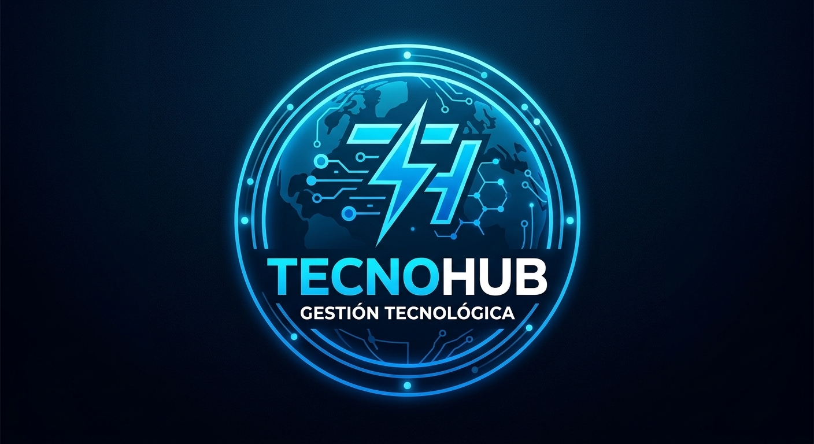

Gestión Fluida de Servicios Tecnológicos
Plataforma web desarrollada para la asignatura de Programación Digital (UNIPAZ). Conecta necesidades técnicas con soluciones eficientes en tiempo real.
Ir al Panel CRUD
TECNOHUBPlataforma web desarrollada para la asignatura de Programación Digital (UNIPAZ). Conecta necesidades técnicas con soluciones eficientes en tiempo real.
Ir al Panel CRUD